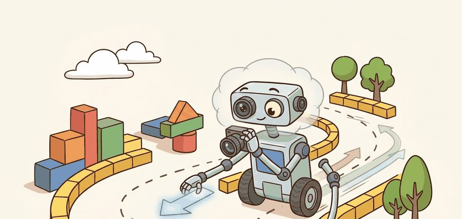
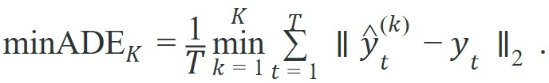
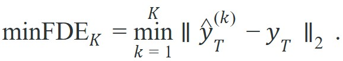
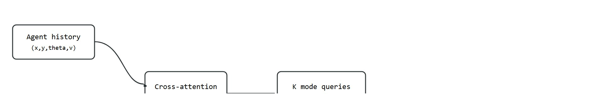

To predict a driver is to admit you do not know what they will do, and then to be ready for every reasonable thing they might.
On trajectory forecasting

This section assumes familiarity with the tracked actor representations produced in section 48.2 (sensor fusion) and the object-tracking pipeline introduced in section 27.2. The multi-modal trajectory distributions computed here are consumed directly by the route and local planner in section 48.4, and the same best-of-K evaluation framework recurs in Part 11 alongside uncertainty quantification and runtime monitoring (section 53.4).
A car waits at an intersection. It could continue straight, turn left, or yield indefinitely. A planner that picks one of those futures and commits to it will be wrong two thirds of the time. This is the central challenge of behavior prediction: the future is genuinely multi-modal, and a system that collapses it to a single trajectory will hesitate, over-brake, or freeze. Current learned predictors resolve this by outputting a distribution over plausible futures conditioned on lane geometry, which is why prediction quality is now the binding constraint on safe urban autonomy. You will build that distribution, evaluate it with minADE and minFDE, and see how lane-graph conditioning keeps hypotheses physically plausible.
A car idling at a green light could go straight, turn left across your path, or sit there texting for another four seconds, and the only honest prediction is all three at once. Behavior prediction turns that discomfort into a measurable contract: ingest agent histories and a vectorized map, output $K$ candidate future trajectories per agent with probabilities, and score them against the realized future. Because the future is uncertain, the standard metrics evaluate the best of $K$ samples rather than a single guess, which rewards covering the true mode without penalizing diversity. A single-mode predictor on the Argoverse 2 benchmark produces a minFDE of roughly 3.5 m at a 6-second horizon; adding lane-graph conditioning and six diverse modes typically drops that to around 1.2 m (as of 2023), a factor-of-three reduction that in practice translates into earlier and safer planner responses at intersections.
Figure 48.3A captures the core intuition: a single observed history fans out into several plausible futures, and a good predictor keeps every one of them alive until the evidence resolves which will happen.
A predictor that collapses six futures into one has not simplified the problem; it has hidden the part that matters most when the road diverges.
Let an agent have ground-truth future positions $y_1, \dots, y_T$ and $K$ predicted trajectories, the $k$-th being $\hat y_1^{(k)}, \dots, \hat y_T^{(k)}$. The minimum Average Displacement Error (ADE) over $K$ samples averages the per-timestep L2 distance to the nearest predicted mode:

The minimum Final Displacement Error (FDE) keeps only the last timestep,

Both take the best of $K$ predictions: the model is credited if any one of its samples is close to the truth. A related metric, the miss rate, counts the fraction of agents for which even the best sample's final point exceeds a threshold (commonly 2 m).
A common misconception is that a low minADE or minFDE score means the predictor is accurate in the way a classification accuracy or RMSE would be: that the top output is trustworthy and the planner can simply follow it. This is wrong in the embodied AI context because best-of-K rewards coverage across K candidates, not confidence in any single one. A model can achieve an excellent minFDE by placing one of its K trajectories near the truth while assigning that trajectory a low probability and outputting five high-probability trajectories that are completely wrong. The correct mental model is that minADE/minFDE measure whether the correct future mode was represented somewhere in the output set; safe deployment also requires that the planner treats all K modes as live hypotheses and that the assigned probabilities are calibrated, neither of which is guaranteed by the metric alone.
A vectorized lane graph matters in embodied AI because the vehicle body cannot teleport. Every predicted trajectory that exits a drivable lane forces the downstream route and local planner to discard it, which wastes compute and triggers last-instant replanning. At highway speeds a 50 ms planning delay corresponds to roughly 1.5 m of travel, so discarded off-road predictions directly lengthen reaction distance. Without map conditioning, the predictor treats the road surface as unconstrained free space, a physically false and hazardous assumption.
Vectorization converts each lane centerline into a polyline (a sequence of straight-line segments joining ordered points, here each segment stored as a short displacement vector) of short displacement vectors. A graph attention layer, a neural network layer that lets each node in a graph selectively weight information from its neighbors, connects adjacent and successor segments, so a query about one lane inherits turn-restriction and yield information from its neighbors. Encoding the agent history into the same vector space lets cross-attention, a mechanism where one set of features (here, the agent history) queries another set (the lane graph) to pull in relevant context, anchor each predicted mode to a lane the agent can actually reach. Figure 48.3B below traces this pipeline end to end.

VectorNet encodes both agent histories and map elements (lane centerlines, crosswalks, boundaries) as polylines of vectors. A graph network then reasons over these polylines so predictions respect road geometry. MTR (Motion Transformer) pairs learnable motion-mode queries with a transformer to produce diverse, map-consistent trajectories, and it led the Waymo motion-prediction benchmark as of 2023. Both architectures must fit inside the AV stack's 100 ms planning cycle. On Nvidia Drive AGX Orin (the compute platform used by multiple production AV programs), a six-mode MTR forward pass over 32 tracked agents typically completes in roughly 18 ms, which leaves the remainder for sensor fusion, planning, and control. This timing budget is why lane-graph-anchored multi-modal decoding matters beyond accuracy alone. Skipping the map encoder to predict free-space trajectories saves time on paper, but those trajectories routinely exit the drivable surface at intersections. The downstream planner then rejects or clips them, which erases any latency advantage. As an illustrative order of magnitude, without lane conditioning roughly 40 percent of predicted modes at a four-way intersection might leave the drivable surface and require discarding; with conditioning, that figure can drop below 2 percent, so the planner receives six usable hypotheses instead of three half-valid ones.
So far: prediction outputs $K$ candidate trajectories with probabilities, scored by best-of-K displacement (minADE/minFDE); lane-graph conditioning (vectorized polylines, graph attention, cross-attention) anchors those trajectories to drivable lanes so the planner is not forced to discard off-road modes.
When using the nuScenes prediction devkit, PredictionHelper.get_future_for_agent(seconds_of_history, seconds_in_future) silently drops any agent whose annotation history is shorter than seconds_of_history. On sparse-annotation splits this can quietly remove most cut-in and merge agents, the exact rare maneuvers you want to stress-test. Set seconds_of_history=1.0 (the minimum the model can run with) rather than the default 2.0 so those short-history agents stay in your evaluation slice, then verify the agent count before and after filtering.
Because minADE and minFDE take the minimum over samples, a predictor is scored on whether it covered the true future, not on whether its top sample was right. This is intentional: downstream planning must be safe against every plausible mode, so a predictor that keeps the correct mode alive (even at low probability) is more useful than one that commits confidently to the wrong single path. See runtime monitoring and fail-safe behavior for how planners act on this uncertainty at execution time.
Mode collapse in a multi-modal predictor is like a weather forecaster who, after years of sunny-day data, always writes "sunny" in every one of their six daily slots. On average their forecasts look fine because most days are sunny, but when a storm arrives not one slot warned of rain and no umbrella was packed. Forcing diversity across slots, even at a small cost to average accuracy, is the only way to ensure rare but consequential events appear somewhere in the forecast set.
The danger of best-of-K is mode collapse: a model that minimizes average error tends to predict $K$ near-identical trajectories down the most common mode (going straight). It then scores well on routine data but misses exactly the rare, safety-critical maneuvers (a sudden lane change). Diversity-promoting losses, anchor trajectories, and mode-specific queries (as in MTR) exist precisely to prevent this collapse.
Input: Agent history $\mathbf{h} = \{(x_t, y_t, \theta_t, v_t)\}_{t=-H}^{0}$ over past $H$ timesteps; vectorized lane graph $\mathcal{G} = \{\mathbf{p}_i\}$ of polyline segments; number of prediction modes $K$; forecast horizon $T$.
Output: $K$ trajectory samples $\{\hat{\mathbf{y}}^{(k)}\}_{k=1}^{K}$ each of length $T$, with mode probabilities $\pi_1, \dots, \pi_K$ and scalar scores $\text{minADE}_K$, $\text{minFDE}_K$.
With the metric definitions and the decoding algorithm in hand, the fastest way to internalize why best-of-K rewards coverage is to compute it directly on a handful of trajectories.
The example computes $\text{minADE}_6$ given six predicted trajectory samples and one ground-truth future.
import numpy as np
# Ground truth: T=5 future (x, y) positions of one agent.
gt = np.array([[1.0, 0.0], [2.0, 0.1], [3.0, 0.3], [4.0, 0.6], [5.0, 1.0]])
# Six predicted trajectories, shape (K=6, T=5, 2).
# Sample 0 hugs the truth; the rest are alternative modes (lane changes, stops).
rng = np.random.default_rng(0)
preds = np.stack([
gt + rng.normal(0, 0.05, gt.shape), # near-correct mode
gt + np.array([0, 1.5]), # left lane change
gt + np.array([0, -1.5]), # right lane change
gt * np.array([0.6, 1.0]), # braking / slowing
gt + rng.normal(0, 1.0, gt.shape), # noisy
gt + np.array([0.0, 3.0]), # far-off mode
])
def min_ade_k(preds, gt):
"""minADE_K: best-of-K mean per-timestep L2 displacement."""
# Per-sample, per-timestep L2 distance: shape (K, T).
disp = np.linalg.norm(preds - gt[None, :, :], axis=2)
ade_per_sample = disp.mean(axis=1) # average over T -> (K,)
return float(ade_per_sample.min()) # best of K
def min_fde_k(preds, gt):
"""minFDE_K: best-of-K final-timestep L2 displacement."""
final = np.linalg.norm(preds[:, -1, :] - gt[-1], axis=1) # (K,)
return float(final.min())
print("minADE_6:", round(min_ade_k(preds, gt), 3), "m")
print("minFDE_6:", round(min_fde_k(preds, gt), 3), "m")Expected output: a small minADE_6 (roughly 0.04 m) and minFDE_6, because sample 0 closely tracks the truth. Remove sample 0 from the stack and both metrics jump, demonstrating that the score depends entirely on whether the correct mode was among the $K$ candidates.
Trace the best-of-K computation with K=2 modes and T=2 timesteps. Ground truth future: $y_1 = (1.0, 0.0)$, $y_2 = (2.0, 0.0)$. Mode 0 (lane-keep): $\hat y_1^{(0)} = (1.0, 0.2)$, $\hat y_2^{(0)} = (2.0, 0.4)$. Mode 1 (left turn): $\hat y_1^{(1)} = (0.9, 1.0)$, $\hat y_2^{(1)} = (1.5, 2.0)$.
Per-timestep L2 distances for mode 0: $\lVert(0,0.2)\rVert = 0.20$ and $\lVert(0,0.4)\rVert = 0.40$, so its ADE is $(0.20 + 0.40)/2 = 0.30$. For mode 1: $\lVert(-0.1,1.0)\rVert = 1.005$ and $\lVert(-0.5,2.0)\rVert = 2.062$, so its ADE is $(1.005 + 2.062)/2 = 1.534$. Taking the minimum over the two modes gives $\text{minADE}_2 = \min(0.30, 1.534) = 0.30$ m. For the final point only, mode 0 contributes $0.40$ and mode 1 contributes $2.062$, so $\text{minFDE}_2 = \min(0.40, 2.062) = 0.40$ m. The lane-keep mode wins both because the agent in fact went straight; had it turned, mode 1 would have carried the score and the lane-keep mode's confident $0.30$ would have been irrelevant.
Waymo's production prediction stack scores candidate futures on the Waymo Open Motion Dataset protocol (minADE, minFDE, miss rate) and feeds the full multi-modal set, not just the top mode, into the behavior planner running on the vehicle. The MTR-style decoder anchors each mode to a vectorized lane graph so that hypotheses at a four-way intersection stay on drivable lanes, which is what lets the planner reason about a crossing pedestrian and an oncoming left-turner simultaneously rather than committing to one guess.
The Argoverse 2 and Waymo Open Motion Dataset evaluation kits compute minADE, minFDE, miss rate, and probabilistic metrics with the official protocol. Use nuScenes prediction challenge tooling for the lane-graph map API. Reference models: VectorNet, LaneGCN (Lane Graph Convolutional Network), and MTR are available in open implementations. Always score with the dataset's own kit so your numbers are comparable.
Mode collapse on a high-speed lane change. A model trained to minimize average error predicts six near-parallel straight paths; when a fast vehicle suddenly changes lanes, none of the six samples covers the new lane, minFDE spikes, and the planner gets no warning. Good aggregate minADE on routine data can hide this, so always evaluate the rare-maneuver slice separately.
A prediction team sees collisions concentrated at merges. Logs show the predictor assigned 95 percent probability to "stay in lane" and 5 percent to "merge," but the planner used only the top mode. The fix is twofold: planning must consume the full multi-modal set, and the predictor needs a diversity loss so the merge mode is geometrically distinct, not a near-copy of the lane-keep mode.
ADE is how wrong you were on average; FDE is how wrong you were at the end. The "min" in front of both means: out of your guesses, your best one counts.
Language-conditioned and scene-language prediction (2024-2026). Recent work fuses large language model reasoning with trajectory predictors so that natural-language scene descriptions (pedestrian stepping off curb, construction zone sign) shift the predicted mode distribution without retraining. DRAMA (Kang et al., CVPR 2024, Toyota Research Institute) shows LLM-produced risk annotations cutting miss rate by 18 percent on rare events where purely geometric models fail. Open question: how to keep inference inside the 100 ms AV planning budget when the LLM backbone is an order of magnitude slower than the trajectory decoder.
Occupancy flow as a unified representation (2024-2026). Instead of predicting per-agent waypoints, occupancy-flow models forecast a dense probability field over all drivable cells, naturally capturing occlusion and crowded scenes without explicit object detection. Waymo's OccFlow work and the subsequent UniOcc (Shi et al., NeurIPS 2024, Waymo Research) demonstrate that flow-augmented occupancy outperforms agent-centric predictors at intersections with more than eight interacting agents.
Closed-loop learned prediction with simulator feedback (2025-2026). Open-loop minADE/minFDE does not penalize predictions that look good on history but cause cascading errors when the ego plan depends on them. Closed-loop training in NAVSIM and Waymax (Gulino et al., NeurIPS 2023, extended through 2025 at Google DeepMind) couples the predictor's output to a differentiable planner so the gradient signals that a confident wrong mode causes a collision, not just a displacement error.
Open problem for PhD students. Calibration under covariate shift: current predictors are trained on logged human behavior, but once an AV departs from the human trajectory distribution (by braking early, yielding unexpectedly), the prediction model has no training signal for how surrounding agents respond to a non-human ego. Developing online recalibration methods that update mode probabilities during deployment without drifting into overconfidence is an open and tractable thesis problem.
Can you explain why minADE_6 can look excellent while the predictor is unsafe, and what additional measurement would expose the problem? If not, revisit the mode-collapse mechanism.
| Tool or Library | Role in the Topic | Builder Advice |
|---|---|---|
| Argoverse 2, Waymo Open Motion Dataset | Benchmarks with official prediction metrics | Score with their kits for comparable minADE / minFDE. |
| VectorNet, LaneGCN, MTR | Lane-graph-conditioned predictor families | Reproduce a benchmark number before customizing. |
| Rare-maneuver evaluation slice | Mode-collapse detection | Always report it alongside aggregate metrics. |
Section 48.2 provides the tracked actors this section forecasts, Section 48.4 and 48.8 consume the multi-modal predictions for planning, and 48.5 explores world models that predict scene evolution directly.
Start from the worked example, delete the near-correct sample, and replace it with a sixth near-straight path. Recompute minADE_6 and minFDE_6 and confirm that engineered mode collapse inflates error exactly when the truth is an off-mode maneuver.
Gao et al., "VectorNet: Encoding HD Maps and Agent Dynamics from Vectorized Representation," CVPR 2020. Shi et al., "Motion Transformer with Global Intention Localization and Local Movement Refinement" (MTR), NeurIPS 2022. Wilson et al., "Argoverse 2: Next Generation Datasets for Self-Driving Perception and Forecasting," NeurIPS 2021.
These define lane-graph prediction models and the benchmarks whose metrics this section computes.
Prediction is multi-modal forecasting scored by best-of-K displacement. Strong minADE_K means the right future was among your samples; guarding against mode collapse on rare maneuvers, and feeding all modes to the planner, is what turns that score into safety.
Implement the miss rate (fraction of agents whose best final point exceeds 2 m) and add it to the worked example. Then design a same-panel comparison of two predictors on a cut-in scenario set, reporting minADE_6, minFDE_6, and miss rate, and argue which predictor a planner should prefer.
Beginner (weekend): minADE/minFDE scorer on Argoverse 2. Write a Python script using the Argoverse 2 motion forecasting split and NumPy to load 100 agent sequences, compute minADE_6 and minFDE_6, and visualize the worst-performing agents on a lane-graph backdrop. The key challenge is correctly aligning the coordinate frames between the agent history and the map polylines so displacement errors are meaningful rather than offset by a global transform.
Intermediate (1 to 2 weeks): lane-conditioned multi-modal predictor with Gymnasium. Build a VectorNet-style predictor in PyTorch, wrap the Argoverse 2 scenario loader as a Gymnasium environment, and train with a winner-takes-all loss plus a diversity penalty. The key challenge is preventing mode collapse: without an explicit diversity term and per-mode anchor queries, all six output trajectories converge to the straight-ahead mode within the first few hundred gradient steps, which you can measure by tracking the pairwise L2 distance between predicted endpoint clusters.